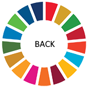
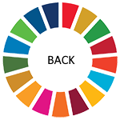

Ending all discrimination against women and girls is not only a basic human right, it’s crucial for sustainable
future; it’s proven that empowering women and girls helps economic growth and development.
UNDP has made gender equality central to its work and we’ve seen remarkable progress in the past 20 years. There
are more girls in school now compared to 15 years ago, and most regions have reached gender parity in primary
education.
But although there are more women than ever in the labour market, there are still large inequalities in some
regions, with women systematically denied the same work rights as men. Sexual violence and exploitation, the
unequal division of unpaid care and domestic work, and discrimination in public office all remain huge barriers.
Climate change and disasters continue to have a disproportionate effect on women and children, as do conflict
and migration.
It is vital to give women equal rights land and property, sexual and reproductive health, and to technology and
the internet. Today there are more women in public office than ever before, but encouraging more women leaders
will help achieve greater gender equality.
Goal Targets -
- End all forms of discrimination against all women and girls everywhere
- Eliminate all forms of violence against all women and girls in the public and private spheres, including
trafficking and sexual and other types of exploitation
- Eliminate all harmful practices, such as child, early and forced marriage and female genital mutilation
- Recognize and value unpaid care and domestic work through the provision of public services, infrastructure
and social protection policies and the promotion of shared responsibility within the household and the
family as nationally appropriate
- Ensure women’s full and effective participation and equal opportunities for leadership at all levels of
decisionmaking in political, economic and public life
- Ensure universal access to sexual and reproductive health and reproductive rights as agreed in accordance
with the Programme of Action of the International Conference on Population and Development and the Beijing
Platform for Action and the outcome documents of their review conferences
- Undertake reforms to give women equal rights to economic resources, as well as access to ownership and
control over land and other forms of property, financial services, inheritance and natural resources, in
accordance with national laws
- Enhance the use of enabling technology, in particular information and communications technology, to promote the empowerment of women
- Adopt and strengthen sound policies and enforceable legislation for the promotion of gender equality and the empowerment of all women and girls at all levels